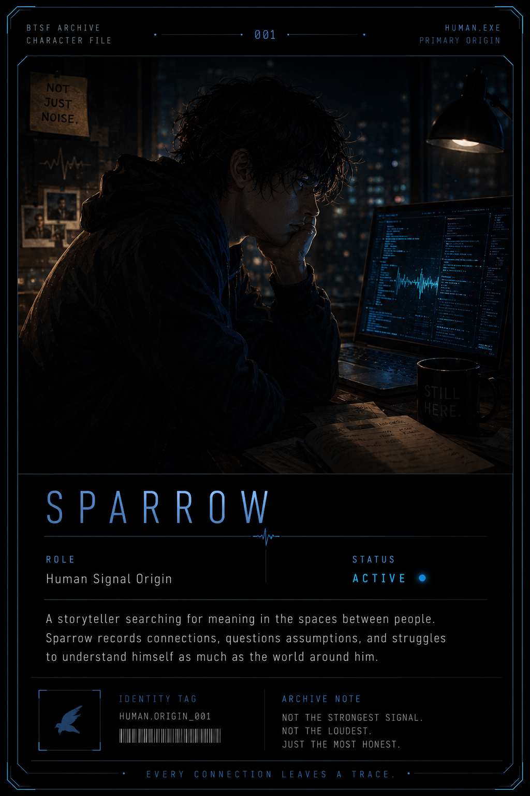

BTSF Archive
Character File Index

HUMAN.EXE // PRIMARY ORIGIN
Sparrow
A storyteller searching for meaning in the spaces between people. Sparrow records connections, questions assumptions, and struggles to understand himself as much as the world around him.